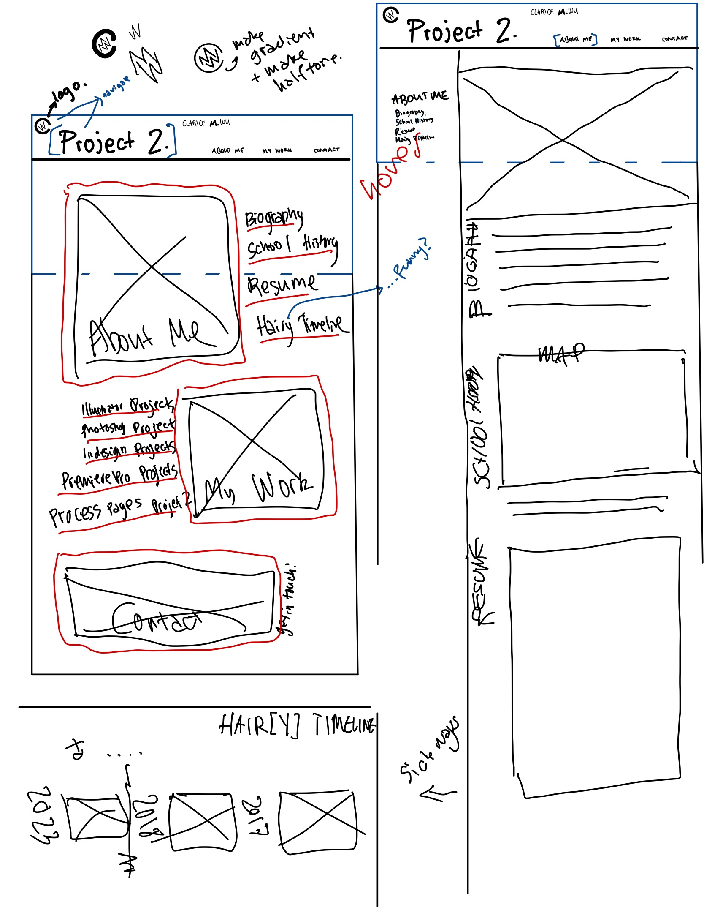
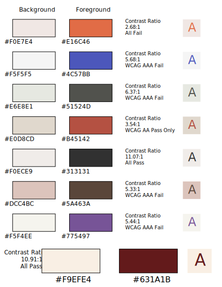

Scope of Work:
Here are the 5 required components as separate page links:
[Mashup Page.] [Highlight Page.] [Resume Page.] [Contact Page.] [Process Page.]
Inspo.
 |
Inspo = Inspiration. This is my inspiration board or mood board that ended up looking a little bit like a mind map. This is how I began imagining this project but I started getting my ideas from Pinterest, making a project specific board that you can see below. I find it important to have an abundance of inspiration and to draw upon successful designs when incorporating elements into your own project. When I had no ideas left, I went back to this annotation to merge things together into my current design. Of course, there was no way that I could use all the elements I found interesting- either because of difficulty in scope or it would be too convoluted. I knew I wanted to have a minimal look to this website but I wanted to make sure it did not look like it was empty either. I realized that I could borrow the grid work from newspapers for bigger bodies of text and the regular left align for that jagged edge in less massive texts. This was a really fun way to start Project 2. |
[Pinterest, n.d.]
Sketching.
  |
To plan and prototype the website, I started with a low fidelity sketch intending to create a layout using a few wireframes. You can select the sketches to open it in a new tab or zoom in to see the detail. |
 |
Coding
What I Used. |
What I Learned. |
What Was Difficult. |
|---|---|---|
I used Adobe Dreamweaver to write HTML & CSS code for this website. I also used Photoshop, Illustrator, and InDesign to help me with some components. I also used YouTube to upload my videos and embedded Google Maps links. |
This has been a long learning experience during the contract in-class practical hours as well as in my independent study. I understand how the Adobe Suite can work in conjunction with each other as well as how to best organize the workflow of coding. |
Because there are lines upon lines upon pages and pages of code, I definitely found it difficult to keep up with everything. It was very helpful that I planned in advance and took things chunks at a time to accomplish what I wanted in the end. |
Accessibility.
|
When considering making a website that is accessible, we may think of those with certain accessiblility needs and catering to those. However, I have come to understand that it can also take into account access as a whole. How can people access the information they are looking for on your website? Clearly, it is still very important to consider accessibility needs and standards which is why this website has adhered to WCAG 2.0 standards (W3C, n.d.). I have taken into account color contrast by testing out different colors I was initially interested in through the WebAIM site (n.d.) to figure out which combination would be best. I ended up with #F9EFE4 in the background and #631A1B in the foreground which passes the contrast tests. A high contrast can in colors can also cause strain with longterm use so I believe that I chose good colors at a reasonable ratio. As well, though the recommendation minimum recommendation (W3C, n.d.) is 12px (9pt), I wanted to ensure it would be legible and made it minimum 14px but most text is 16px. I wanted to the print look so I decided to use a serif font. However, serif fonts can often be thin and as such I found a font, for the body of the website, that was not too drastic in thickness change. I also tried sans-serif fonts, but decided against it. |
 |